Modern analytics systems require more than dashboards. Businesses need scalable workflows capable of collecting, transforming, storing, forecasting, and visualizing data in a reliable and automated way.
This project was developed as an end-to-end analytics engineering and business intelligence system that automates the extraction of global economic indicators from the World Bank API, processes the data through ETL pipelines, stores it in a dimensional MySQL architecture, applies machine learning forecasting, and delivers interactive reporting through Power BI.
The objective of this project was to design and implement a scalable analytics pipeline capable of:
The project was developed to simulate a real-world analytics engineering workflow where data pipelines, database systems, forecasting models, and reporting layers work together to support scalable business intelligence and data-driven decision making.
The project follows a modular analytics architecture designed to support automated ingestion, transformation, forecasting, storage, and reporting workflows.
World Bank API
↓
Python ETL Pipeline
↓
Transformation Layer
↓
MySQL Database
↓
Star Schema Modeling
↓
Machine Learning Forecasting
↓
Power BI Reporting Layer
Using Python, Pandas, and REST APIs, the ETL pipeline automates the extraction and transformation of historical economic indicators including GDP, Inflation, and Population data across multiple countries.
A dimensional star schema architecture was implemented in MySQL to optimize analytical querying and reporting performance.
The dimensional model separates descriptive business entities from measurable economic metrics, enabling scalable business intelligence workflows.
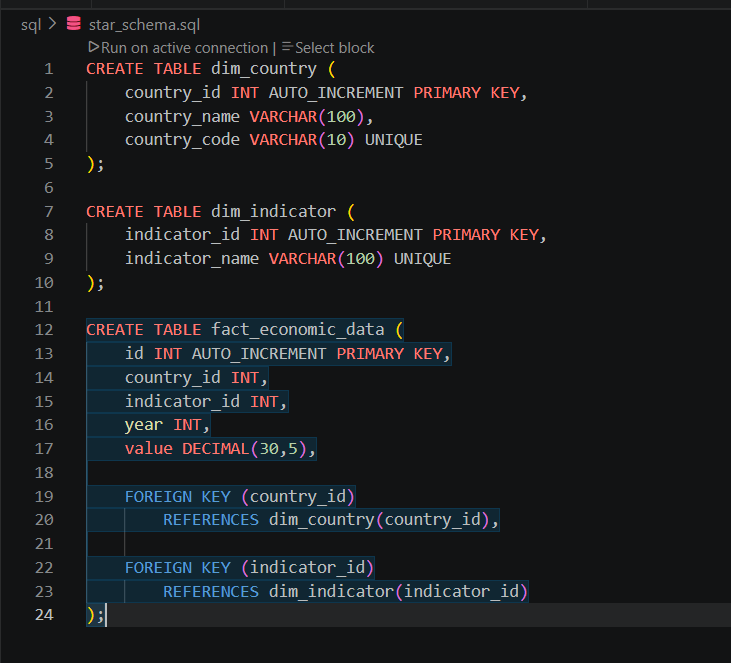
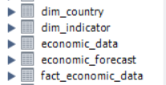
The SQL layer functioned as the analytical core of the system, transforming raw economic datasets and forecast outputs into structured business intelligence insights through advanced querying and dimensional reporting techniques.
Using MySQL, I developed analytical workflows capable of comparing historical and forecasted GDP trends, identifying economic ranking changes, evaluating inflation volatility, and validating dimensional relationships across the star schema architecture.
One analytical workflow compares the latest actual GDP values against machine learning forecast projections to calculate GDP difference percentages and identify countries expected to experience future economic expansion or contraction.
Another workflow uses Window Functions and ranking analysis to evaluate how country-level GDP positions may change in future forecast periods. This allows the system to identify projected economic ranking shifts across major economies.
Additional SQL workflows analyze inflation volatility by detecting the highest historical inflation years per country, helping identify periods of economic instability and macroeconomic disruption.
Rather than functioning as isolated SQL scripts, the analytics engine was integrated directly into the ETL and reporting architecture, enabling forecast-aware business intelligence reporting and dimensional economic analysis.
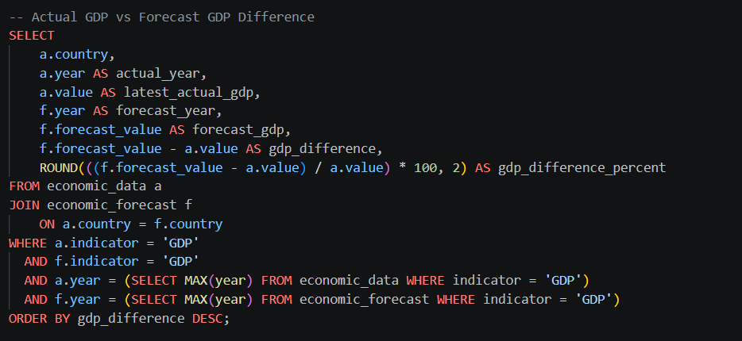
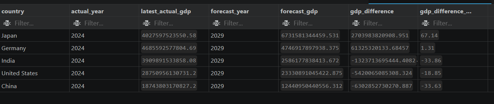
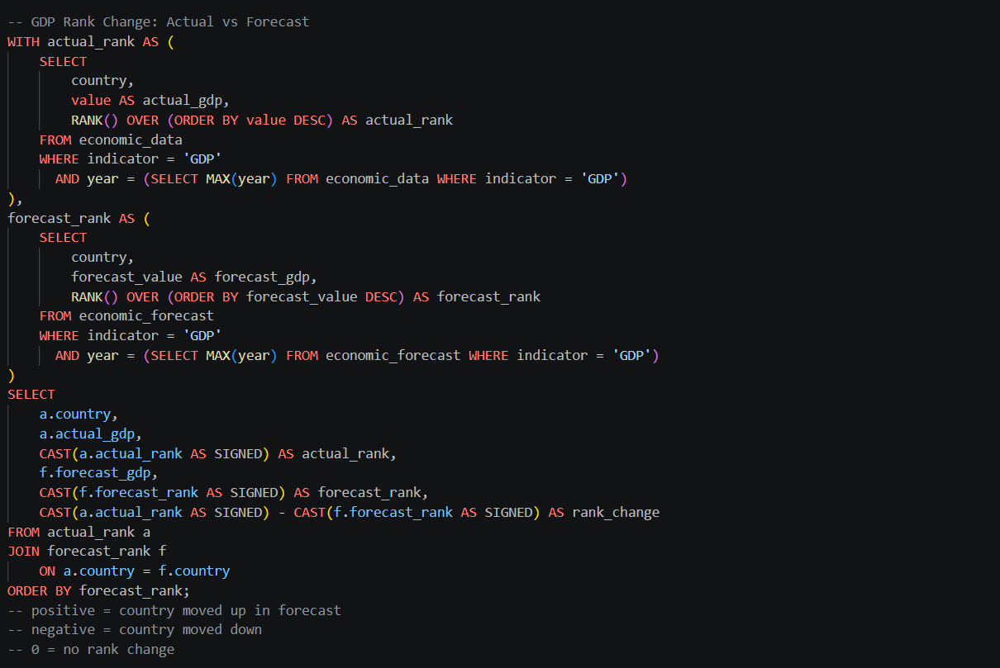
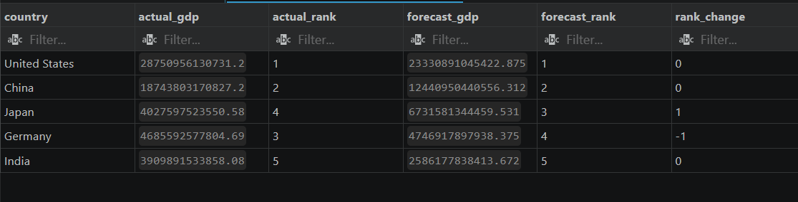
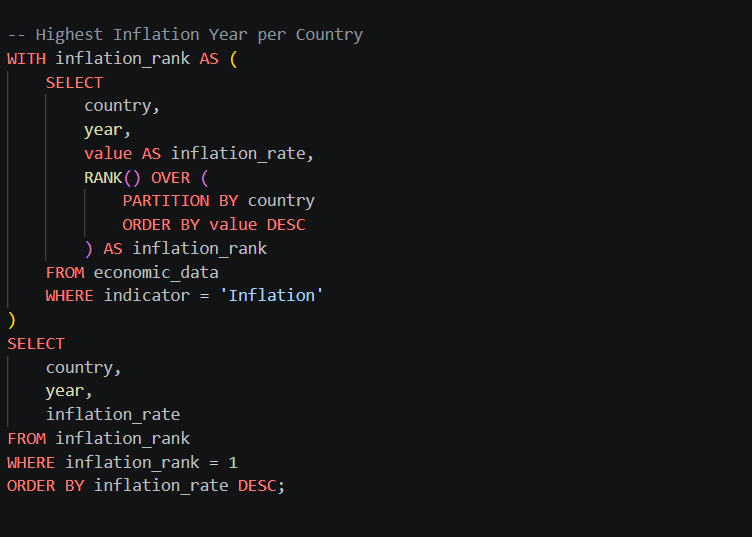
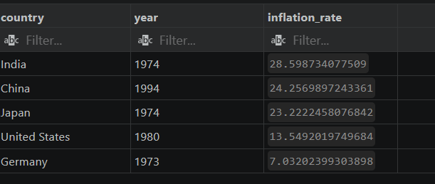
Linear Regression models were implemented using Scikit-learn to forecast GDP and population trends based on historical economic indicators.
Forecast outputs are stored directly in MySQL and integrated into SQL analytics and Power BI reporting workflows.
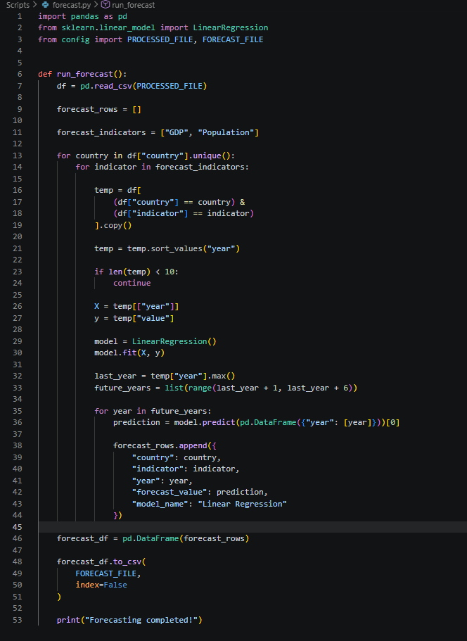
The final reporting layer was developed in Power BI to transform processed economic datasets into interactive business intelligence dashboards capable of supporting macroeconomic analysis, country-level comparison, trend evaluation, and forecast-driven reporting.
The reporting environment was designed as a multi-page analytical dashboard system combining KPI monitoring, dimensional filtering, trend visualization, role-based access control, and executive reporting workflows.
The Executive Overview dashboard provides a consolidated macroeconomic summary across major economies, allowing users to analyze GDP, inflation, and population trends from a single reporting interface.
The dashboard includes KPI cards for:
Interactive slicers allow users to dynamically filter data by country, indicator, and historical year range. Trend analysis visuals compare GDP growth trajectories across multiple countries, while supporting charts evaluate population rankings, GDP growth efficiency, and inflation behavior over time.
The Executive Overview page functions as a centralized monitoring layer designed for high-level economic comparison and exploratory business intelligence analysis.
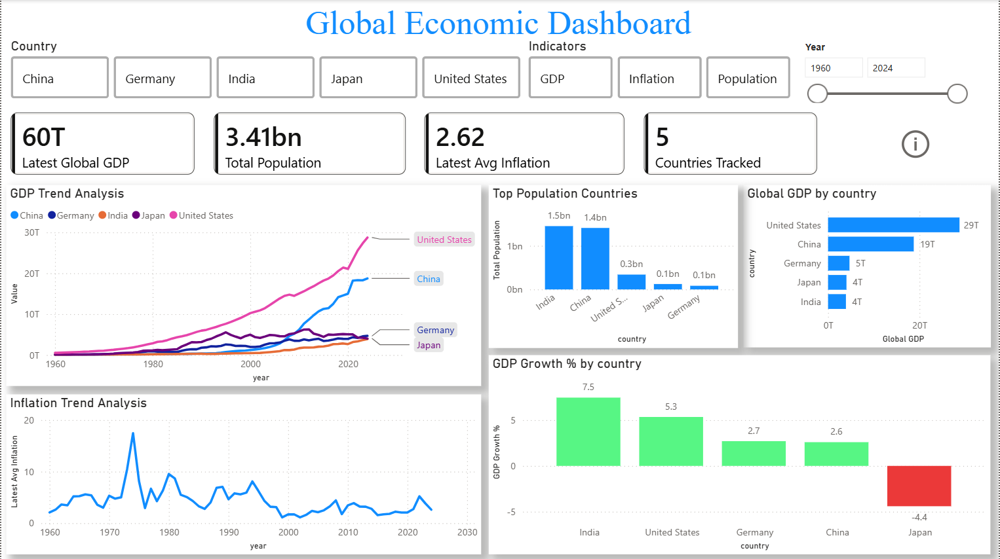
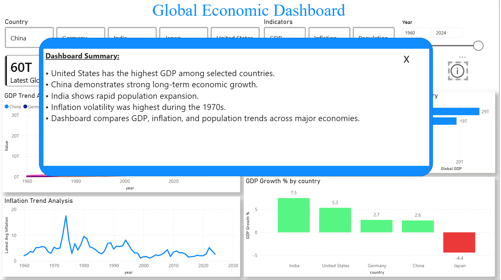
The GDP Analysis dashboard focuses on long-term economic growth evaluation and country-level GDP comparison across historical periods.
The dashboard includes KPI metrics such as:
The trend analysis line chart visualizes GDP expansion patterns from 1960–2024, allowing users to identify long-term economic acceleration and country-level growth divergence.
Additional visuals include:
This reporting layer helps evaluate relative economic dominance, long-term growth sustainability, and global GDP contribution patterns across major economies.
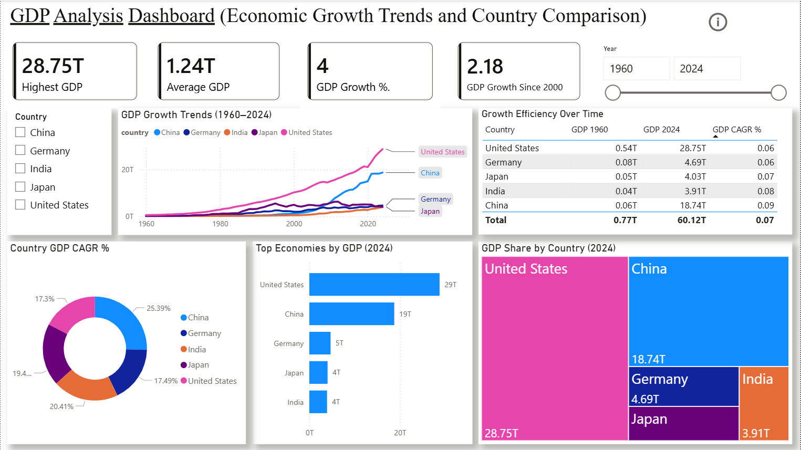
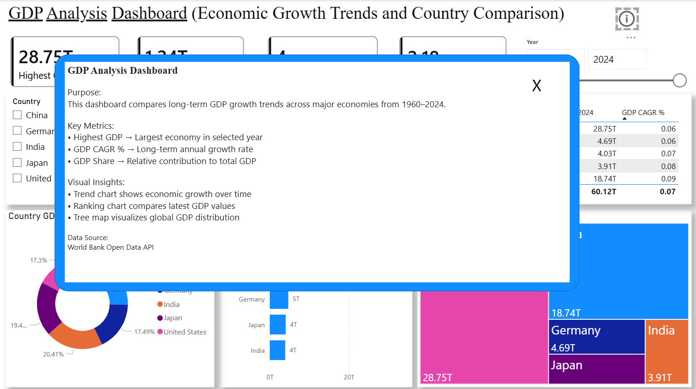
The Inflation Analysis dashboard was designed to evaluate historical inflation volatility, economic instability periods, and country-level inflation behavior across multiple decades.
Key KPI metrics include:
The dashboard visualizes inflation movement trends over time using multi-country line charts, enabling comparative analysis of inflation spikes and long-term price stability patterns.
Additional analytical visuals include:
This dashboard enables users to identify periods of economic instability, compare inflation control efficiency across countries, and evaluate post-crisis inflation behavior using interactive analytical reporting.
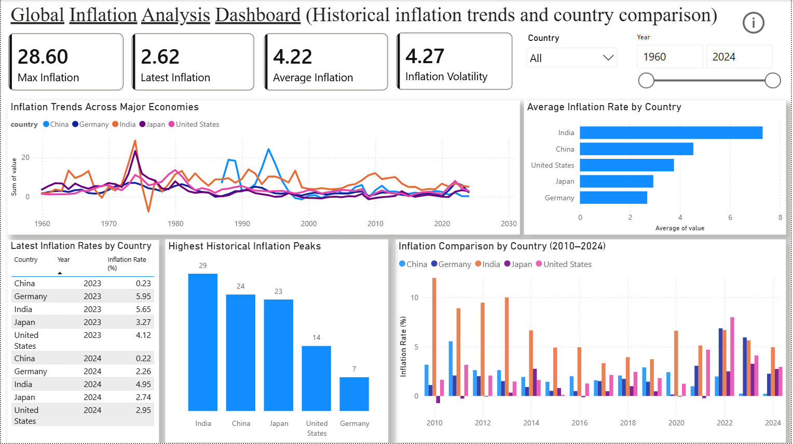
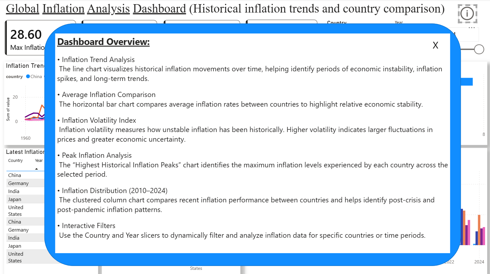
The Population Analysis dashboard focuses on long-term demographic expansion, population contribution analysis, and country-level population growth evaluation.
The dashboard includes KPI metrics such as:
Trend analysis visuals compare historical population growth trajectories across major economies from 1960–2024, enabling evaluation of demographic acceleration and long-term population expansion patterns.
Additional visuals include:
The reporting layer helps identify demographic dominance, long-term population growth efficiency, and shifting global population distribution patterns across major economies.
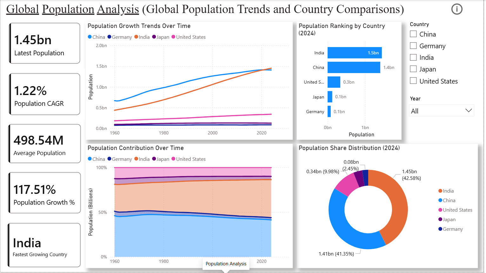
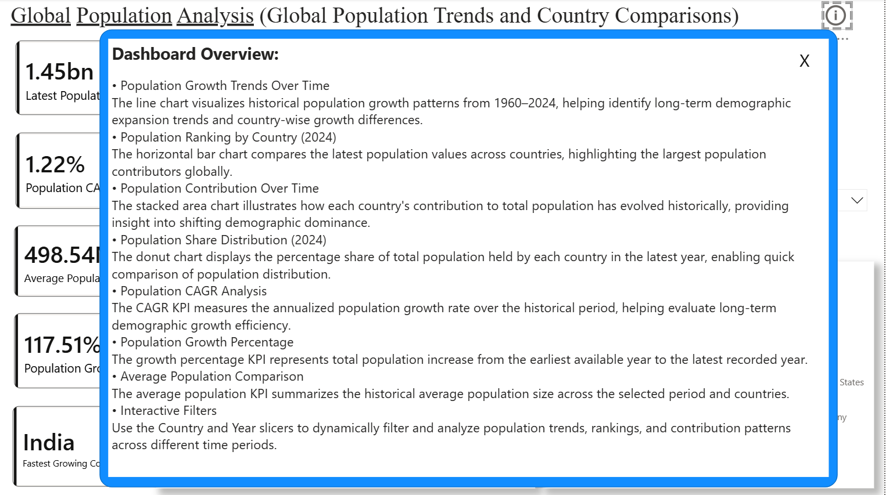
To simulate enterprise-grade dashboard governance, Row-Level Security (RLS) was implemented within Power BI to restrict country-level visibility based on analyst roles.
Separate analyst roles were configured for different countries, ensuring users could only access the economic data relevant to their assigned region.
For example:
[country] = "United States"
The RLS implementation demonstrates practical knowledge of dashboard governance, role-based access control, and secure business intelligence reporting workflows commonly used in enterprise analytics environments.
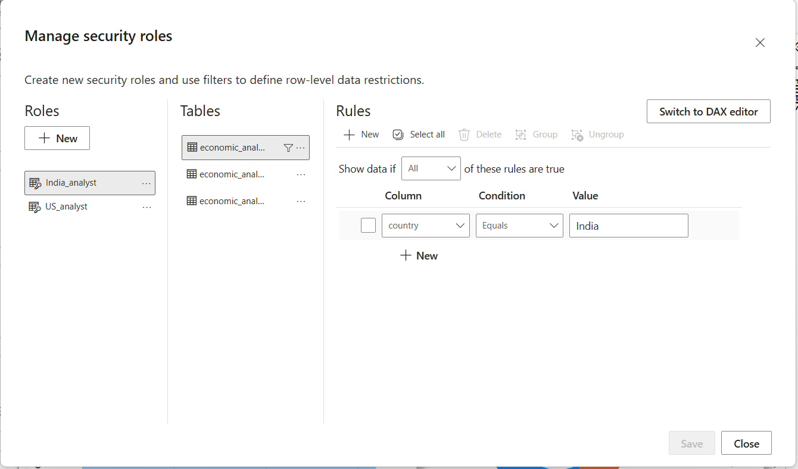
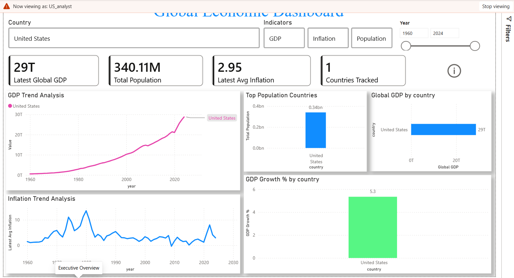
GitHub Actions was configured to validate Python scripts during repository updates, establishing a lightweight CI workflow for pipeline verification and version control management.
Key challenges included resolving foreign key conflicts during dimensional loading, handling duplicate dimension records, maintaining schema consistency across ETL execution cycles, and integrating forecasting outputs into relational workflows.
This project demonstrates practical analytics engineering capabilities across ETL development, SQL analytics, dimensional modeling, machine learning forecasting, business intelligence reporting, workflow automation, and data governance.
Modern organizations require more than static dashboards and spreadsheet reporting. They need scalable analytics systems capable of continuously collecting, transforming, analyzing, and visualizing data in a reliable and automated way.
This project demonstrates the development of a complete analytics engineering and business intelligence workflow — combining ETL pipelines, database engineering, SQL analytics, machine learning forecasting, and Power BI reporting into a unified data system.
Rather than focusing only on visualization, the project emphasizes the full analytics lifecycle:
This project reflects my ability to design practical, end-to-end analytics solutions that bridge data engineering, analytics, and business intelligence into a scalable decision-support system.
See The Project here!